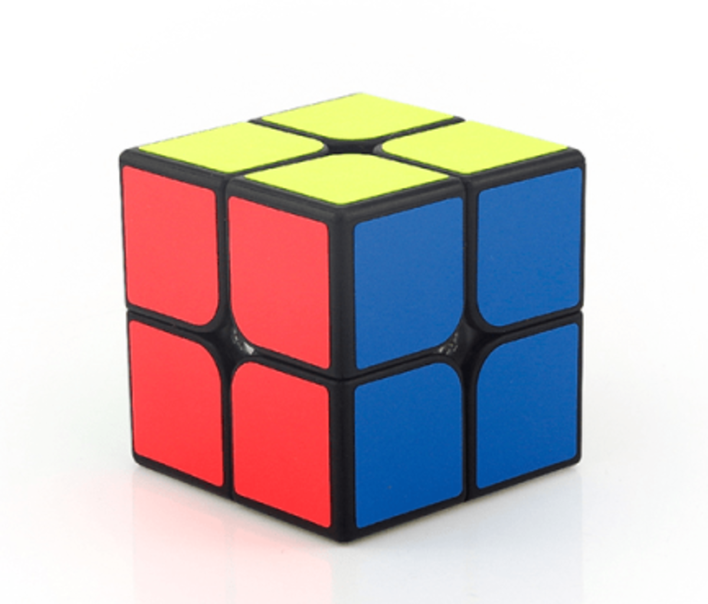
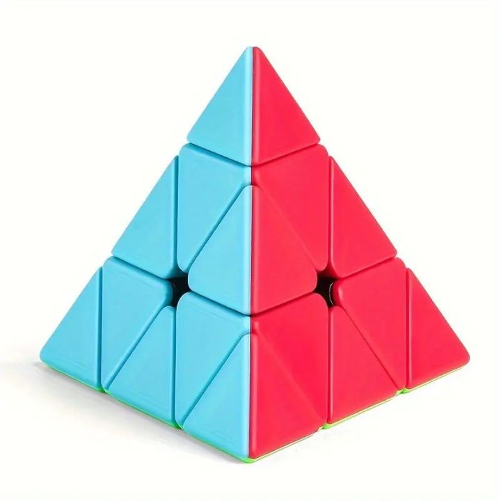
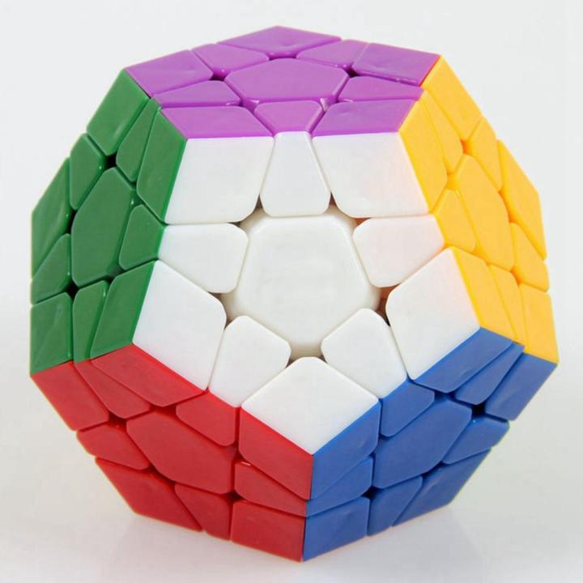

Different rubik's cubes
There are many different types of Rubik's Cubes available on the market today, ranging from simple variations to highly complex puzzles, each with their own unique features, difficulty levels, and challenges that cater to different skill levels and interests.
The classic 3x3x3 Rubik's Cube remains the most popular and iconic version worldwide, featuring six distinct faces with nine colorful stickers each in six different vibrant colors, making it the standard puzzle that introduced millions to the world of twisty puzzles.
Smaller versions like the 2x2x2 (also known as the Pocket Cube) are perfect for beginners due to their reduced complexity and faster solving times, while larger puzzles such as the 4x4x4 (Rubik's Revenge) and 5x5x5 (Professor's Cube) offer significantly greater complexity with more pieces to manipulate and multiple layers to solve.
Specialty cubes include the Pyraminx with its tetrahedral shape and triangular faces, the Megaminx featuring a dodecahedral structure with twelve faces, and the Skewb with its irregular cubic shape and unique rotation mechanism, each requiring different solving techniques and algorithms that challenge even experienced cubers.

.jpg)

